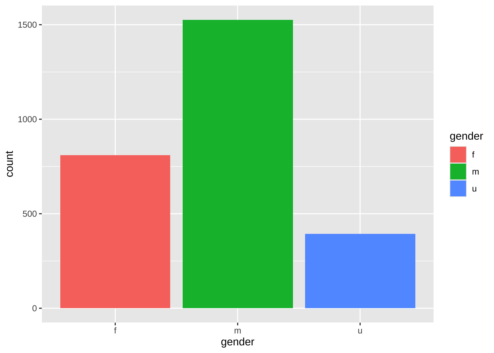

url <- "https://github.com/locusclassicus/text_analysis_2024/raw/main/files/manual_title_subset.tsv"
download.file(url, destfile = "../files/manual_title_subset.tsv")3 Визуализации
3.1 Графические системы
В R есть несколько графических систем: базовый R, lattice и ggplot2. В этом курсе мы будем работать лишь с ggplot2 как с наиболее современной. Если вам интересны первые две, то вы можете обратиться к версии курса 2023/2024 г.
Упражнения swirl, направленные на освоение первых двух систем, выполнять не обязательно. Однако их прохождение поможет лучше понять “графическую идиоматику” R.
Мы также не будем использовать функцию qplot(), потому что в новых версиях ggplot2 ее использование не рекомендуется. Если хотите ее освоить, то swirl вам в помощь.
Настоящая графическая сила R – это пакет ggplot2. В его основе лежит идея “грамматики графических элементов” Лиланда Уилкинсона (Мастицкий 2017) (отсюда “gg” в названии). С одной стороны, вы можете постепенно достраивать график, добавляя элемент за элементом (как в базовом R); с другой – множество параметров подбираются автоматически, как в Lattice. Именно с ней мы будем работать в первую очередь.
3.2 Датасет: метаданные романов XIX-XX вв.
Знакомиться с ggplot2 мы будем на примере датасета из коллекции “NovelTM Datasets for English-Language Fiction, 1700-2009”, подготовленного Тедом Андервудом, Патриком Кимутисом и Джессикой Уайт. Они собрали метаданные о 210,266 томах художественной прозы в HathiTrust Digital Library и составили из них несколько датасетов.
Мы возьмем небольшой датасет, который содержит провернные вручную метаданные, а также сведения о категории художественной прозы для 2,730 произведений, созданных в период 1799-2009 г. (равные выборки для каждого года). Об особенностях сбора и подготовки данных можно прочитать по ссылке. Нужный нам файл (в формате tsv) [скопирован] в репозиторий курса.
Прежде всего избавимся от лишних столбцов и посмотрим на данные.
library(tidyverse)
noveltm <- read_tsv("../files/manual_title_subset.tsv")
noveltm <- noveltm |>
select(author, inferreddate, latestcomp, gender, nationality, shorttitle, category)
noveltmЭти данные подходят для того, чтобы проверить наблюдение, сделанное Франко Моретти относительно длины названий романов. В статье “Корпорация стиля: размышления о 7 тысячах заглавий (британские романы 1740-1850)” (2009 г., рус. перевод в книге “Дальнее чтение”, 2016 г.). Моретти заметил, что на протяжении XVIII-XIX вв. названия становятся короче, причем уменьшается не только среднее, но и стандартное отклонение (т.е. разброс значений). Правда, в наших данных есть не только романы и не только британские, но тем более интересно сравнить результат.
Для отражения связи между двумя переменными (год и длина) подойдет диаграмма рассеяния. В наших данных сведения о публикации хранятся в столбце inferreddate, а названия – в столбце shorttitle. Прежде всего надо посчитать количество слов в названии: для этого можно посчитать количество пробелов и добавить единицу.
noveltm <- noveltm |>
mutate(n_words = str_count(shorttitle, " "))
noveltmМы готовы приступить к созданию графика.
3.3 Слой за слоем
Функция ggplot() имеет два основных аргумента: data и mapping. Аргумент mapping задает эстетические атрибуты геометрических объектов. Обычно используется в виде mapping = aes(x, y), где aes() означает aesthetics.
Под “эстетикой” подразумеваются графические атрибуты, такие как размер, форма или цвет. Вы не увидите их на графике, пока не добавите какие-нибудь “геомы” – геометрические объекты (точки, линии, столбики и т.п.). Эти объекты могут слоями накладываться друг на друга (Wickham и Grolemund 2016). Попробуем.
noveltm |>
ggplot(aes(inferreddate, n_words)) +
geom_point()
Упс. Точек очень много, и они накладываются друг на друга, т.к. число слов – дискретная величина. Поступим так же, как Моретти, который отразил на графике среднее для каждого года. Для этого нам надо снова поколдовать над данными.
noveltm_summary <- noveltm |>
group_by(inferreddate) |>
summarise(n = n(),
mean_w = mean(n_words, na.rm = TRUE)) |>
filter(n > 1)
noveltm_summaryСнова попробуем изобразить. Добавим линию тренда, изменим внешний вид точек и тему оформления, а также уберем подпись оси X.
noveltm_summary |>
ggplot(aes(inferreddate, mean_w)) +
geom_point(color = "steelblue", alpha = 0.7, size = 2) +
geom_smooth(color = "tomato") +
theme_bw() +
xlab(NULL)
Хорошо прослеживается нисходящая тенденция.
3.4 Кодирование категориальных переменных
В столбце nationality хранятся данные о происхождении писателя.
noveltm |>
group_by(nationality) |>
summarise(n = n()) |>
arrange(-n)Отберем только английских и американских авторов и сравним тенденции в этих двух группах.
noveltm_sel <- noveltm |>
filter(nationality %in% c("uk", "us")) |>
group_by(nationality, inferreddate) |>
summarise(n = n(),
mean_w = mean(n_words, na.rm = TRUE)) |>
filter(n > 1) |>
select(-n)
noveltm_selТеперь сравним две группы графически, а также добавим заголовок и подзаголовок.
noveltm_sel |>
ggplot(aes(inferreddate, mean_w, color = nationality)) +
geom_point(alpha = 0.7, size = 1.5) +
geom_smooth() +
theme_bw() +
labs(
title = "Title Length in UK and US",
subtitle = "NovelTM Data 1800-2009",
x = NULL
)`geom_smooth()` using method = 'loess' and formula = 'y ~ x'
3.5 Оформление
Ggplot2 дает возможность легко поменять цветовую палитру и шрифтовое оформление, а также добавить фон.
Шкалы ColorBrewer scale_color_brewer() и scale_fill_brewer() позволяют использовать специально подобранные палитры хорошо сочетаемых цветов. Посмотреть эти шкалы можно на сайте https://colorbrewer2.org.
Общее правило для выбора таково.
Если дана качественная переменная с упорядоченными уровнями (например, “холодный”, “теплый”, “горячий”) или количественная переменная, и необходимо подчеркнуть разницу между высокими и низкими значениями, то для визуализации подойдет последовательная шкала.
Если дана количественная переменная с осмысленным средним значением, например нулем, 50%, медианой, целевым показателем и т.п., то выбираем расходящуюся шкалу.
Если дана качественная переменная, уровни которой невозможно упорядочить (названия городов, имена авторов и т.п.), ищем качественную шкалу.
 .
.
У нас две качественные группы, поэтому выбираем качественную шкалу. На рисунке они посредине (в R есть и другие шкалы, но пока о них не будет). Цвета можно задавать и вручную по названию или коду.

noveltm_sel |>
ggplot(aes(inferreddate, mean_w, color = nationality)) +
geom_point(alpha = 0.7, size = 1.5) +
geom_smooth(se = FALSE) +
theme_bw() +
labs(
title = "Title Length in UK and US",
subtitle = "NovelTM Data 1800-2009",
x = NULL) +
scale_color_brewer(palette = "Dark2")`geom_smooth()` using method = 'loess' and formula = 'y ~ x'Добавим шрифтов.
library(showtext)
font_add_google("Special Elite", family = "special")
showtext_auto()
noveltm_sel |>
ggplot(aes(inferreddate, mean_w, color = nationality)) +
geom_point(alpha = 0.7, size = 1.5) +
geom_smooth(se = FALSE) +
theme_bw() +
labs(
title = "Title Length in UK and US",
subtitle = "NovelTM Data 1800-2009",
x = NULL) +
scale_color_brewer(palette = "Dark2") +
theme(
axis.title = element_text(family = "special"),
title = element_text(family = "special")
)
Финальный штрих.
library(ggimage)
url <- "https://img.freepik.com/premium-photo/stack-old-books-white-background_427771-2463.jpg?w=1800"
font_add_google("Special Elite", family = "special")
showtext_auto()
g <- noveltm_sel |>
ggplot(aes(inferreddate, mean_w, color = nationality)) +
geom_point(alpha = 0.5, size = 1.5) +
geom_smooth(se = FALSE) +
theme_bw() +
labs(
title = "Title Length in UK and US",
subtitle = "NovelTM Data 1800-2009",
x = NULL) +
scale_color_brewer("country", palette = "Dark2") +
theme(
axis.title = element_text(family = "special", color = "sienna"),
title = element_text(family = "special", color = "sienna"),
axis.text = element_text(color = "sienna"),
axis.ticks = element_blank(),
plot.margin = unit(c(0.4, 2, 0.4, 0.4), "inches"), # t, r, b, l
panel.border = element_rect(color = "sienna"),
legend.position = c(0.8, 0.8),
#legend.box.background = element_rect(color = "sienna")
)
ggbackground(g, url)`geom_smooth()` using method = 'loess' and formula = 'y ~ x'
Правда или ложь?
3.6 Категоризованный график
Различные группы данных можно выделять не только цветом и формой, но и помещать каждую в свое окошко (facet).
Пока не расслабляемся, впереди еще один урок swirl.
Правда или ложь?
3.7 Экспорт графиков из среды R
Способы:
- реализованные в R драйверы стандартных графических устройств;
- функция
ggsave() - меню программы RStudio.
# код сохранит pdf в рабочую директорию
pdf(file = "Diorisis.pdf")
ggplot(diorisis_sub, aes(reorder(subgenre, n), n, fill = subgenre)) +
geom_col(show.legend = F) +
facet_wrap(~genre, scales = "free") +
coord_flip()
dev.off()Еще один способ сохранить последний график из пакета ggplot2.
ggsave(
filename = "Diorisis.png",
plot = last_plot(),
device = "png",
scale = 1,
width = NA,
height = 500,
units = "px",
dpi = 300
)Не расслабляемся! Еще один вопросик.
# загружаем нужные пакеты
library(languageR)
library(ggplot2)
# загружаем датасет
meta <- oldFrenchMeta
# допишите ваш код ниже
# постройте столбиковую диаграмму,
# показывающую распределение произведений по темам; цветом закодируйте жанр;
# уберите названия осей;
# поверните координатную ось;
# поменяйте тему оформления на черно-белую,
# а шрифт -- на Palatino;
# добавьте заголовок "Plot by [Your Name]"
# экспортируйте график в формате jpg
# с раширением 300 dpi;
# в названии файла должна быть
# ваша фамилия и номер группы